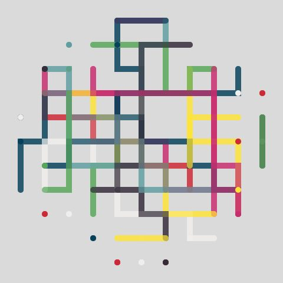
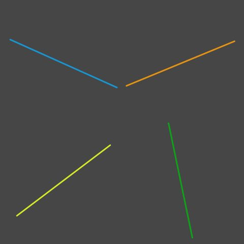
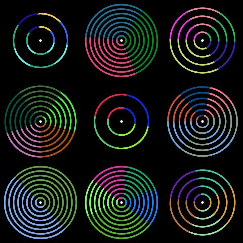

Audioviz
Grids
-

Random grid paths Thirty random stair-step paths snap to a grid, draw themselves across the canvas, then retract and reroll. -

Rotating lines A grid of spinning, accelerating lines. Move the pointer toward the edge of the canvas to change the grid density. -

Sine arcs Nine rosettes of concentric arcs whose spread breathes on a sine wave and re-seeds its symmetry each cycle.